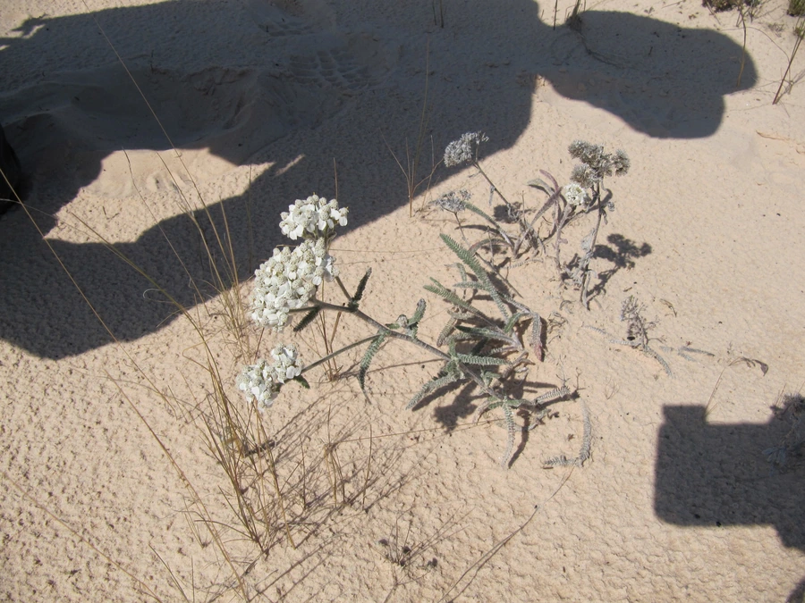

花卉与草本 · 植物界
蓍草 Achillea millefolium

菊科蓍属多年生草本，叶片羽状细裂如千叶，花小、聚成伞房状花盘，是欧洲传统的药用植物与花境材料。
- 分类
- 门被子植物门纲木兰纲目菊目科菊科属蓍属
- 栖息环境
- 草甸、路边与林缘，喜光耐旱、耐寒耐瘠薄
- 地理分布
- 北半球温带广布；中国东北、华北、西北及西南高山地区
- 保护级别
- 暂无评估；未被列入国家重点保护野生植物名录
物种志
蓍草为菊科蓍属多年生草本，高三十至八十厘米，茎直立，被白色柔毛。叶片互生，披针形，二至三回羽状细裂，形似千叶，表面被毛。头状花序小，密集排列成伞房状，舌状花白色、粉红或淡黄，管状花淡黄色，花期六月至九月；瘦果扁平，无冠毛，果期八月至十月。
蓍草广布于北半球温带，中国东北、华北、西北及西南高山地区有分布，欧洲、北美也有，多生于草甸、路边和林缘。它喜光、耐旱、耐寒，对土壤要求不严，在贫瘠地也能生长。花小而密、花期长，是花境和野花组合的常用材料；全草含挥发油，欧洲传统医学用它止血消炎，嫩叶可作香草。蓍草在欧洲民间被视为具有保护力量的植物。
形态与习性
- 株高30–80 cm，茎被柔毛
- 花期6–9 月，伞房状花序
- 果期8–10 月，瘦果扁平
- 光照喜光，全日照最佳
- 水分耐旱，忌积水
- 土壤疏松壤土，耐瘠薄
- 主要用途花境、野花组合，全草药用
趣味知识
- 蓍草的叶片二至三回羽状细裂，像千片小叶，因此又名千叶蓍。
- 欧洲传统医学用蓍草止血消炎，古希腊士兵曾用它处理伤口。
- 蓍草的花序由许多小头状花聚成伞房状，盛开时像一个个小花盘。